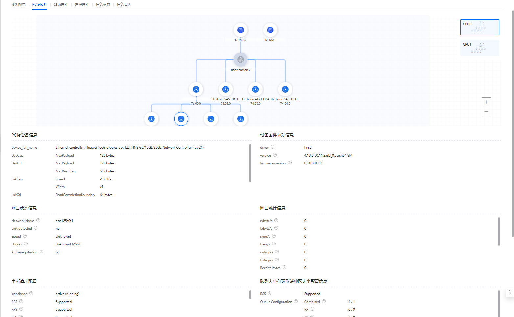

前提条件
已创建全景分析任务，并且成功完成分析。
操作步骤
- 在“工程管理”区域，依次单击指定工程和分析任务名称前的
 。
。展开节点列表。
- 单击节点名称查看分析结果。可单击右上角的
 按钮导出全景分析数据。
按钮导出全景分析数据。- 单击节点名称默认打开“总览 ”页签，如图1所示，界面参数描述如下列表格所示。

- “总览”页面展示CPU、内存子系统、存储子系统、网络子系统及其它配置项的信息（使用物理机环境时会显示系统部件图）。
- 检测到可优化的指标项时显示“优化建议”区域，展开可查看详细的优化建议和修改方法，针对部分配置项给出优化建议，用
 标识。部分参数带有
标识。部分参数带有 标识，鼠标悬停在标识符上会显示详细参数描述和优化建议。
标识，鼠标悬停在标识符上会显示详细参数描述和优化建议。
表1 CPU Package区域参数说明 参数
说明
CPU型号
显示CPU型号。
Core数量
显示CPU核数量。
最大频率
显示CPU最大频率。
当前频率
显示CPU当前频率。
CPU Core
ID
显示CPU厂商编号。“0x48”代表“HiSilicon”。
最大频率
显示CPU最大频率。
当前频率
显示CPU当前频率。
L1I
显示CPU的一级高速指令缓存大小。
L2
显示CPU的二级缓存大小。
L1D
显示CPU的一级高速数据缓存大小。
L3 cache
缓存大小
显示CPU的三级缓存大小。
L3 cache共享节点
显示共享L3 cache的NUMA节点。
NUMA节点
节点
显示NUMA节点名称。
CPU核
显示NUMA节点的CPU核编号。
总内存大小
显示NUMA节点的总内存大小。
空闲内存大小
显示NUMA节点的空闲内存大小。
NUMA节点距离
节点
显示NUMA节点。
说明：NUMA节点之间的距离指从节点x上访问节点y上的内存需要付出的代价的一种表现形式。距离越短，表示CPU访问内存的速度越快，反之亦然。
NUMA平衡
NUMA平衡
显示NUMA平衡开关状态。
表2 内存子系统区域参数说明 参数
说明
内存总大小
显示系统总内存容量。
内存条数量
显示内存条数量。
空插槽数量
显示空内存插槽数量。
内存条/DIMM列表
位置/插槽位置
显示内存插槽位置。
容量
显示当前插槽位置安装的内存容量大小。
最大速率
显示内存最大速率。
配置速率
显示配置的内存速率。
类型
显示内存条类型。
表3 存储子系统区域参数说明 参数
说明
存储总量
显示存储总容量大小。
总盘数
显示硬盘总数。
硬盘
ID/设备名称
显示设备名称。
型号/硬盘型号
显示硬盘型号。
容量/硬盘容量
显示硬盘容量大小。
类型/硬盘类型
显示硬盘类型。
RAID控制卡
RAID控制器名称
显示RAID卡型号。
RAID控制器ID
显示RAID控制器芯片型号。
缓存大小
显示缓存大小。
表4 网络子系统区域参数说明 参数
说明
网卡
显示网卡数量。
网口数
显示网口数量。
网卡
延迟
显示延迟时间。
NUMA节点
显示NUMA节点。
内核驱动程序
显示内核驱动程序。
内核模块
显示内核模块。
子系统
显示子系统。
网口
名称
显示网口名称。
Device(B/D/F)
显示设备的B/D/F。
硬件ID
显示硬件ID。
txkB/s
每秒传输的字节总数，单位为KB。
rxkB/s
每秒接收的字节总数，单位为KB。
txpck/s
每秒传输的数据包总数。
rxpck/s
每秒接收的数据包总数。
最大传输速率
显示最大传输速率。
当前传输速率
显示当前传输速率。
最大数据负载（字节）
显示最大数据负载。
详细信息
显示设备的详细信息。
表5 运行时环境信息区域参数说明 参数
说明
基础系统信息
BIOS版本
显示BIOS版本信息。
OS版本
显示OS版本信息。
kernel版本
显示系统内核版本。
JDK版本
显示JDK版本。
glibc版本
显示glibc版本。
system_dmesg
显示当前系统dmesg信息。单击“查看详情”查看详细信息。
docker info
显示Docker容器的信息。单击“查看详情”查看详细信息。
说明：该参数需要在宿主机上安装Docker容器时显示内容。
sysctl
显示所有sysctrl配置项。单击“查看详情”查看详细信息。
kernelConfig
显示内核配置。单击“查看详情”查看详细信息。
docker images
显示Docker容器镜像。单击“查看详情”查看详细信息。
说明：该参数需要在宿主机上安装Docker容器时显示内容。
BMC固件版本
显示BMC固件版本。
内存管理系统
SMMU
显示SMMU功能的状态。
页表大小
显示页表大小。
透明大页
显示透明大页功能的状态。
标准大页
显示标准大页大小。
大页数量
显示标准大页数量。“0”表示没有配置。
交换分区
显示当前交换分区大小。
脏数据缓存到期时间（单位1/100秒）
显示脏数据缓存到期时间。
脏页面占用总内存最大的比例
显示脏页面占用总内存最大比率。
脏页面缓存占用总内存最大的比例
显示脏页面缓存占用总内存最大比率。
唤醒pdflush进程刷新脏数据间隔
显示唤醒pdflush进程刷新脏数据间隔，单位为1/100秒。
最小保留的空闲内存大小(KB)
显示最小保留的空闲内存大小，单位为KB。
网卡固件版本
显示网卡端口和网卡固件版本。
虚拟机/容器
虚拟机Libvirt版本
显示虚拟机Libvirt版本。
KVM虚拟机配置参数
显示KVM虚拟机配置参数。
容器版本
显示容器版本。
kernel内核相关参数
HZ值
显示HZ值。
nohz(定时器机制)
显示nohz（定时器机制）的状态。
cmdline
显示整个kernel启动脚本。
表6 存储资源配置区域参数说明 参数
说明
存储卷
显示存储卷数量。
文件系统
显示文件系统分区数量。
RAID组
显示RAID组数量。
RAID级别
逻辑盘名称
显示逻辑盘名称。
逻辑盘ID
显示逻辑盘ID。
RAID控制器ID
显示RAID控制器ID。
RAID级别
显示RAID级别。
逻辑盘条带大小
显示逻辑盘条带大小。
逻辑盘当前读策略
显示逻辑盘当前读策略。
逻辑盘当前写策略
显示逻辑盘当前写策略。
逻辑盘缓存策略
显示逻辑盘缓存策略。
CacheCadence标识
显示CacheCadence标识。
RAID配置
显示当前的RAID配置。
存储信息
设备名称
显示设备名称。
硬盘文件预读大小（KB）
显示硬盘文件预读大小。
存储IO调度机制
显示存储IO调度机制。
磁盘请求亲和设置
显示磁盘请求亲和设置。“1”表示确保I/O完成的动作会由发起该I/O请求的CPU处理。
磁盘请求队列长度设置
显示采样间隔时间内，队列中对指定磁盘的读写请求的平均数量。
磁盘队列深度
显示磁盘队列深度，即当主机发起IO请求时，设备能够支持同时处理的IO数量。
IO合并
显示IO合并的设置值。
- 0：表示启用所有类型的合并尝试。
- 1：表示复杂合并检查被禁用，但简单的与上一个I/O请求合并继续生效。
- 2：表示禁用所有类型的合并尝试。
文件系统信息
分区名称
显示分区名称。
文件系统类型
显示当前分区的文件系统类型。
挂载点
显示当前分区的挂载点。
挂载信息
显示当前分区的挂载信息。
表7 网口配置区域参数说明 参数
说明
网口数量
显示网口数量。
中断聚合
网口名称
显示网口名称。
adaptive-rx
显示接收队列的动态聚合执行功能开关状态。
adaptive-tx
显示发送队列的动态聚合执行功能开关状态。
rx-usecs
产生一个中断之前至少有一个数据包被接收之后的微秒数。
tx-usecs
产生一个中断之前至少有一个数据包被发送之后的微秒数。
rx-frames
产生中断之前发送的数据包数量。
tx-frames
产生中断之前接收的数据包数量。
Offload
网口名称
显示网口名称。
rx-checksumming
显示接收包校验和开关状态。
tx-checksumming
显示发送包校验和开关状态。
scatter-gather
显示分散/聚集功能开关状态。
TSO
显示TCP-segmentation-offload开关状态。
UFO
显示UDP-fragmentation-offload开关状态。
LRO
显示large-receive-offload开关状态。
GSO
显示generic-segmentation-offload开关状态。
GRO
显示generic-receive-offload开关状态。
队列
网口名称
显示网口名称。
队列数
显示网卡队列数。
中断NUMA绑核
网口名称
显示网口名称。
中断号
显示中断号。
中断NUMA绑核信息
显示中断NUMA绑核信息。
xps/rps
显示发送/接收队列绑核信息。
环形缓冲区
网卡名称
显示网卡名称。
TX（Byte）
发送的环形缓冲区大小，单位为字节。
RX（Byte）
接收的环形缓冲区大小，单位为字节。
- 单击“PCIe拓扑信息”查看PCIe的拓扑信息分析结果，如图2，界面参数如表8所示。
- 鼠标悬停至拓扑图中设备图标上可显示设备详细信息和建议。
- 点击“+”或“-”按钮，可以放大或缩小拓扑图。
- 详细参数信息可鼠标悬停至
 图标上查看。
图标上查看。 - 中断分布统计区域可以点击
 按钮进行筛选需要查看的硬中断，中断可以通过下拉框进行选择。
按钮进行筛选需要查看的硬中断，中断可以通过下拉框进行选择。
表8 PCIe拓扑信息参数说明 参数
说明
TOP10进程绑核状态
进程名称
显示进程名称。
绑核信息
显示进程的绑核信息。
中断事件
显示产生中断的事件。
CPU core
显示CPU核编号。
绑定在核上的top10进程线程信息
显示绑核的TOP10进程线程信息。
硬中断信息
CPU核
显示CPU核编号。
设备信息
显示设备信息。
PCIE设备BDF号
显示PCIE设备的BDF编号
中断事件名称
显示中断事件的名称。
中断绑核信息
显示中断绑核的信息。
中断频率（次/s）
显示中断的频率。
网络设备名称
显示网络设备的名称。
网络队列名称
显示网络设备的队列名称。
xps_cpus
显示xps绑核的CPU。
rps_cpus
显示rps绑核的CPU。
rps_flow_cnt
显示每个队列负责flow的最大数量。
硬中断绑核数量
显示硬中断绑核数量。
XPS绑核数量
显示XPS的绑核数量。
RPS绑核数量
显示RPS的绑核数量
中断分布统计
软硬中断频率（次/s）
显示软硬中断的频率。
图3 PCIe拓扑信息-网卡设备
表9 PCIe拓扑信息参数说明-网卡设备信息 参数
说明
PCIe设备信息
device_full_name
显示设备全称。
DevCap
显示设备能力。
DevCtl
显示设备调度。
LnkCap
显示链路能力。
LnkCtl
显示链路调度。
LnkSta
显示链路状态。
设备固件驱动信息
driver
显示驱动名称。
version
显示驱动版本信息。
firmware-version
显示驱动的固件信息。
driver mount params
显示驱动参数信息。
网口状态信息
Network Name
显示网络设备名称。
Link detected
显示网卡的链路监测状态。
Speed
显示网卡的当前速率。
Duplex
显示网卡的工作模式。
Auto-negotiation
显示网卡是否开启自动协商。
网口统计信息
rxbyte/s
显示每秒接受字节数。
txbyte/s
显示每秒发送字节数。
rxdrop/s
显示每秒丢弃的已接收数据包数。
txdrop/s
显示每秒丢弃的已发送数据包数。
Receive bytes
显示接口接收数据的总字节数。
Transmit bytes
显示接口发送数据的总字节数。
Receive drop
显示驱动接收的丢弃包总数。
Transmit drop
显示驱动发送的丢弃包总数。
net_core_statistic
显示net core统计信息。
driver_statistic
显示驱动层统计信息。
driver_queue_statistic
显示驱动层按队列统计信息。
firmware_statistic
显示微码层统计信息。
MAC_statistic
显示物理层统计信息。
中断请求配置
irqbalance
显示中断请求平衡状态。
RPS
显示是否支持RPS技术。
XPS
显示是否支持XPS技术。
RFS
显示是否支持RFS技术。
aRFS
显示是否支持aRFS技术。
Interrupt binding core settings
显示设置的中断绑核数。
队列大小和环形缓冲区大小配置信息
RSS
显示是否支持RSS技术。
Queue Configuration
显示队列配置信息。
ring buffer Configuration
显示环形缓冲区的配置信息。
网卡卸载功能配置信息
rx-checksumming
显示是否支持接收侧硬件校验和（checksum）的计算。
tx-checksumming
显示是否支持发送侧硬件校验和（checksum）的计算。
tx-checksum-ipv4
显示是否支持发送侧对基于IPv4的TCP/UDP的硬件校验和（checksum）的计算。
tx-checksum-ip-generic
显示是否支持发送侧对任何协议或协议层组合的IP校验和（checksum）的计算。
tx-checksum-ipv6
显示是否支持发送侧对基于IPv6的TCP/UDP的硬件校验和（checksum）的计算。
tx-checksum-fcoe-crc
显示是否支持FCoE CRC32的硬件校验和（checksum）的计算。
tx-checksum-sctp
显示发送侧是否支持SCTP的硬件校验和（checksum）的计算。
scatter-gather
显示是否开启分散/聚集(Scatter Gather)功能。
tx-scatter-gather
显示是否开启分散/聚集(Scatter Gather)功能，ndo_start_xmit支持处理页式碎片化skbs(skb_shinfo()->frags)。
tx-scatter-gather-fraglist
显示是否开启分散/聚集 (Scatter Gather) 功能，ndo_start_xmit支持处理链式碎片化skbs(skb->next/prev list)。
tcp-segmentation-offload
显示是否开启TSO功能。
tx-tcp-segmentation
显示TCPv4分片功能的状态。
tx-tcp-ecn-segmentation
显示是否开启硬件正确拆分带有CWR位的数据包，不论是TCPv4（需要开启tx-tcp-segmentation）还是TCPv6（需要开启tx-tcp6-segmentation）。
tx-tcp-mangleid-segmentation
显示是否支持忽略IP ID（IP ID可以基于驱动的偏好设置，既可以随分片增长也可以使其保持不变）。
tx-tcp6-segmentation
显示TCPv6分片功能的状态。
generic-segmentation-offload
显示是否开启分片卸载。
generic-receive-offload
显示是否开启GRO功能。
large-receive-offload
显示是否开启LRO功能。
rx-vlan-offload
显示是否支持接收侧VLAN CTAG硬件加速。
tx-vlan-offload
显示是否支持发送侧VLAN CTAG硬件加速。
receive-hashing
显示是否开启接受侧哈希卸载。
rx-vlan-filter
显示是否开启接收侧VLAN CTAGs过滤。
tx-fcoe-segmentation
显示是否开启FCoE分片。
tx-gre-segmentation
显示是否开启GRE包头的发送分片卸载。
tx-gre-csum-segmentation
显示是否支持GRE包头带有校验和（checksum）计算的发送分片卸载。
tx-ipxip4-segmentation
显示是否支持IP4 or IP6 over IP4包头的发送分片卸载。
tx-ipxip6-segmentation
显示是否支持IP4 or IP6 over IP6包头的发送分片卸载。
tx-udp_tnl-segmentation
显示是否支持UDP隧道包头的发送分片卸载。
tx-udp_tnl-csum-segmentation
显示是否支持UDP隧道包头带有校验和（checksum）计算的发送分片卸载。
tx-gso-partial
显示是否支持部分通用分段卸载功能。
tx-sctp-segmentation
显示是否开启SCTP包发送分片。
tx-esp-segmentation
显示是否开启ESP包发送分片。
tx-udp-segmentation
显示是否开启UDP包发送分片。
tx-vlan-stag-hw-insert
显示是否开启VLAN S-Tag发送硬件加速。
rx-vlan-stag-hw-parse
显示是否开启VLAN S-Tag接收硬件加速。
rx-vlan-stag-filter
显示是否开启VLAN S-Tag接收过滤。
l2-fwd-offload
显示是否允许二层数据包在硬件中转发。
hw-tc-offload
显示是否开启流分类（TC）的硬件卸载功能。
esp-hw-offload
显示是否开启ESP包发送侧硬件卸载功能。
esp-tx-csum-hw-offload
显示是否开启ESP包发送校验和（checksum）卸载。
rx-udp_tunnel-port-offload
显示是否开启接收侧UDP隧道卸载。
tls-hw-tx-offload
显示是否开启接收侧NIC逐包处理加密
tls-hw-rx-offload
显示是否开启发送侧NIC逐包处理加密。
rx-gro-hw
显示是否开启硬件GRO。
tls-hw-record
显示是否支持使用NIC驱动程序和固件的TCP处理取代内核网络堆栈的处理，该功能在使用Linux网络堆栈的场景下不可用，例如防火墙功能，QoS，数据包调度。
其他网络配置信息
mtu
显示能通过的最大数据包大小。
Pause parameters
显示pause侦配置参数。
Sysctl parameters
显示sysctl变量配置。
图4 PCIe拓扑信息-NVMe设备
表10 PCIe拓扑信息参数说明-NVMe设备信息 参数
参数说明
PCIe设备信息
device_full_name
显示设备全称。
DevCap
显示设备能力。
DevCtl
显示设备调度。
LnkCap
显示链路能力。
LnkCtl
显示链路调度。
LnkSta
显示链路状态。
Smart配置信息
critical warning
显示紧急告警。
available spare
显示冗余空间比例。
available spare threshold
显示冗余空间告警比例。
percentage used
显示已使用寿命。
data units read
显示读数据总量。
data units written
显示写数据总量。
host read commands
显示主机总读次数。
host write commands
显示主机总写次数。
controller busy time
显示控制器忙时间统计。
power cycles
显示上电次数。
power on hours
显示上电时长。
unsafe shutdowns
显示非安全关机次数。
media and data integrity errors
显示数据错误次数。
number of error information log entries
显示错误日志条数。
warning composite temperature time
显示混合温度一般告警时间。
critical composite temperature time
显示混合温度严重告警时间。
data status
显示数据健康状态。
基础配置信息
Namespace
显示命名空间。
maximum capacity
显示原始最大容量。
current capacity
显示当前最大容量。
volatile write cache
显示是否支持写缓存。
model number
显示设备型号。
firmware version
显示固件版本。
NVMe version
显示NVMe版本。
device status
显示设备健康状况。
高级配置信息
controller id
显示控制器ID。
PCI slot
显示PCI槽位号。
highest temperature
显示历史最高温度。
capacitance status
显示电容健康状态。
atomic write
显示原子写状态。
bad block rate
显示坏块率。
total blocks count
显示总block数。
bad blocks count
显示总坏块数。
factory bad blocks count
显示出厂坏块数。
flash program failed count
显示flash编程失败计数。
flash erase failed count
显示flash擦失败计数。
maximum data transfer size
显示最大数据传输大小。
系统配置信息
options nvme use_threaded_interrupts
显示NVMe使用线程中断选项。
dirty_tatio
显示触发同步写的脏数据占可用内存的百分比。
dirty_background_ratio
显示触发回刷的脏数据量占可用内存的百分比。
dirty_writeback_centisecs
显示pdflush写入脏数据进程周期。
dirty_expire_centisecs
显示脏数据驻留内存时长。
nvme1
显示设备详情。
设备温度信息
composite temperature
显示温度信息。
exceed temperature threshold count
显示超过门限温度的发生次数。
exceed temperature threshold time
显示超过门限温度的发生时间。
composite highest temperature
显示整盘历史最高温。
composite over temperature threshold count
显示整盘过温计数。
composite over temperature threshold time
显示整盘过温时间。
composite current temperature
显示整盘当前温度。
composite over temperature threshold temperature
显示整盘高温阈值。
composite under temperature threshold temperature
显示整盘低温阈值。
controller highest temperature
显示控制器历史最高温。
controller over temperature threshold count
显示控制器过温计数。
controller over temperature threshold time
显示控制器过温时间。
controller1 current temperature
显示控制器当前温度。
controller1 over temperature threshold temperature
显示控制器高温阈值。
controller1 under temperature threshold temperature
显示控制器低温阈值。
其他配置信息
power states
显示设备功耗级别。
Write mode
显示写模式取值。
self-test
显示诊断测试结果。
disk writes per day
显示平均每天磁盘写入量。
设备IO统计信息
范围（µs）
显示IO读写的时延范围。
读IO频率（次/s）
显示读IO的频率。
写IO频率（次/s）
显示写IO的频率。
- 单击“性能”页签查看性能指标分析结果，如图5所示，界面参数描述如下列表格所示。
表11 CPU区域参数说明 参数
说明
CPU利用率
CPU
CPU核（all表示整体）。
%user
在用户态运行时所占用CPU总时间的百分比。
%nice
在用户态改变过优先级的进程运行时所占用CPU总时间的百分比。
%sys
在内核态运行时所占用CPU总时间的百分比。该指标没有包含服务硬件和软件中断所花费的时间。
%iowait
CPU等待存储I/O操作导致空闲状态的时间占CPU总时间的百分比。
%irq
CPU服务硬件中断所花费时间占CPU总时间的百分比。
%soft
CPU服务软件中断所花费时间占CPU总时间的百分比。
%idle
CPU空闲且系统没有未完成的存储I/O请求的时间占总时间的百分比。
%cpu
CPU使用率（非idle状态下的CPU使用率）
max_use
显示采集时段内的最高使用率及时间点。
平均负载
runq-sz
运行队列的长度，即等待运行的任务的数量。
plist-sz
在任务列表中的任务的数量。
ldavg-1
最后1分钟的系统平均负载。平均负载的计算是在指定时间间隔内，正在运行或可运行（R状态）任务的平均数量与不可中断睡眠状态（D状态）任务的平均数量之和。
ldavg-5
过去5分钟的系统平均负载。
ldavg-15
过去15分钟的系统平均负载。
blocked
当前阻塞的任务数，正在等待I/O完成。
表12 内存区域参数说明 参数
说明
空闲内存
memfree (KB)
可用的空闲内存大小，以KB为单位。不包括缓冲区和缓存的空间。
avail (KB)
可用的内存大小，以KB为单位。包括缓冲区和缓存的空间。
memused (KB)
已使用的内存大小，以KB为单位。包括缓冲区和缓存的空间。
%memused
已使用内存的百分比，即memused(KB)/(memused(KB)+memfree(KB))。
buffers (KB)
内核已用作缓冲区的内存大小，以KB为单位。
cached (KB)
内核已用作缓存的内存大小，以KB为单位。
active (KB)
活跃内存大小，以KB为单位（最近已被使用的内存，除非绝对必要，通常不会被回收）。
inact (KB)
非活跃内存大小，以KB为单位（内存最近很少使用，它更符合回收条件）。
dirty (KB)
等待写回到磁盘的内存大小，以KB为单位。
分页统计
pgpgin/s
每秒从磁盘或SWAP置换到内存的字节数（KB）。
pgpgout/s
每秒从内存置换到磁盘或SWAP的字节数（KB）。
fault/s
每秒系统产生的缺页数，即主缺页与次缺页之和（major + minor），不是生成I/O的页面错误的计数，因为一些页面错误可以在没有I/O的情况下解决。
majflt/s
每秒产生的主缺页数，需要从磁盘加载一个内存分页。
pgscank/s
每秒被kswapd守护进程扫描的分页数量。
pgscand/s
每秒直接被扫描的分页数量。
%vmeff
分页回收效率的度量指标。如果接近100％，那么几乎每个分页都可以在非活动列表的底部获取。如果它变得太低（例如，小于30%），那么虚拟内存有一些问题。如果在时间间隔内没有分页被扫描，则此字段为0。
交换统计
pswpin/s
系统每秒换入的交换分区页面总数。
pswpout/s
系统每秒换出的交换分区页面总数。
NUMA内存统计
名称
显示NUMA节点名称。
interleave_hit
按interleave策略成功分配到该node上的内存页个数。
local_node
运行在该节点的进程成功在这个节点上分配到的内存页个数。
numa_foreign
进程优选从当前节点分配内存页，但实际上却从其他节点分配到的内存页个数。与“numa_miss”相对应。
numa_miss
进程优选从其它节点分配内存页，但是实际上却从当前节点分配到的内存页个数。与“numa_foreign”相对应。
numa_hit
进程优选从当前节点分配并成功分配到的内存页个数。
other_node
运行在其它节点的进程优选从当前节点分配并成功分配到的内存页个数。
表13 存储IO区域参数说明 参数
说明
块设备利用率
DEV
块设备名称
tps
每秒I/O的传输总数。一个传输就是到物理设备的一个I/O请求。发送到设备的多个逻辑请求可以合并成单个I/O请求，传输大小是不确定的。
rd (KB)/s
每秒从设备读取的带宽。
wr (KB)/s
每秒写入到设备的带宽。
avgrq-sz
平均每次存储I/O操作的数据大小（以扇区为单位）。
avgqu-sz
磁盘请求队列的平均长度。
await
从请求磁盘操作到系统完成处理，每次请求的平均消耗时间，包括请求队列等待时间，单位是毫秒，等于寻道时间+队列时间+服务时间。
svctm
系统处理每次请求的平均时间（以毫秒为单位），不包括在请求队列中消耗的时间。
%util
在I/O请求发送到设备期间所消耗的CPU时间百分比（设备的带宽使用率）。当该值接近100％时说明磁盘读写将近饱和。
max_tps
每秒I/O传输总数的最大值。
max_util
显示消耗CPU的最大百分比。
表14 网络IO区域参数说明 参数
说明
网络设备统计
IFACE
网络接口名称。
rxpck/s
每秒接收的数据包总数。
txpck/s
每秒传输的数据包总数。
rxkB/s
每秒接收的字节总数，单位为KB。
txkB/s
每秒传输的字节总数，单位为KB。
eth_ge
网口标准速率，100GE、50GE、40GE、10GE等。
网络设备故障统计
IFACE
网络接口名称。
rxerr/s
每秒接收到的损坏的数据包数量。
txerr/s
当发送数据包时，每秒发生错误的总数。
coll/s
当发送数据包时，每秒发生冲突的数量。
rxdrop/s
当Linux缓冲区满的时候，网卡设备接收端每秒钟丢弃的数据包的数量。
txdrop/s
当Linux缓冲区满的时候，网络设备发送端每秒钟丢弃的网络包的数量。
txcarr/s
当发送数据包时，每秒发生载波错误的次数。
rxfram/s
当接收数据包时，每秒发生帧同步错误的次数。
rxfifo/s
在接收数据包时，每秒发生FIFO溢出错误的次数。
txfifo/s
当发送数据包时，每秒发生FIFO溢出错误的次数。
表15 能耗区域参数说明 参数
说明
平均功率 (W)
系统功率的平均值。
最大功率 (W)
系统功率的最大值。
最小功率 (W)
系统功率的最小值。
- 单击“典型配置”页签查看不同解决方案测试获得的典型配置。
根据工程管理中不同场景创建的工程，可以获得不同测试场景的典型配置信息。
点击“硬件与软件配置”右边的按钮可以查看详细配置信息；将鼠标悬停于
 可查看指标优化建议；将鼠标悬停于上
可查看指标优化建议；将鼠标悬停于上 可以查看推荐配置的具体路径。
可以查看推荐配置的具体路径。可在搜索栏搜索需要查看的组件。
以大数据场景下的典型配置为例，如图6所示。 - 单击“Tracing数据”页签查看Tracing数据的详细信息。
“Tracing数据”页签仅在数据库场景下，勾选了采集Tracing数据选项，并在环境中对需要分析的程序打入了tracepoint信息。打入tracepoint信息请参考“常用操作 > 采集MySQL trace数据”章节。
以数据库场景下选择MySQL的任务为例，如图 Tracing数据的详细信息所示，页面右上角可以点击“下载Tracing数据文件”按钮进行下载。
- 单击“Top数据”页签查看详细信息。
“Top”展示各进程的状态信息，可点击页面右上方的下载按钮导出全景分析数据。
图8 Top数据
- 单击“任务信息”页签查看当前节点任务的详细配置信息和采集信息。
如果任务执行失败，“任务信息”界面上会显示任务失败的原因。
- 单击“任务日志”页签查看任务“采集过程”和“数据分析”的日志信息。
- 单击节点名称默认打开“总览 ”页签，如图1所示，界面参数描述如下列表格所示。